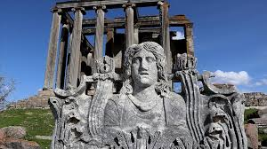
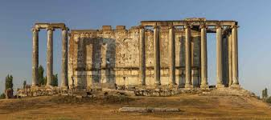

Kütahya İli, Çavdarhisar İlçesi sınırları içersisinde yer alan Aizanoi Antik Kenti, Zeus Tapınağı, Stadyum- Tiyatro Kompleksi ve Macellumu ile Roma Döneminin en önemli kentlerindendir. Bir tepe üzerine kurulmuş olan ve şehrin önemli dinsel yapısı olarak görülen Zeus Tapınağı dünyanın en iyi korunmuş Zeus Tapınaklarından biridir. Etrafındaki sütunla çevrili mekânın üstünün mermer kirişlerle kaplı olması nedeniyle Zeus Tapınağı pseudodipteros plandaki tek örnektir. Şehrin kuzeyinde 13.500 kişi kapasiteli Stadyum ve 20.000 kişi kapasiteli Tiyatronun bir kompleks şeklinde yapılması antik dönemde Aizanoi’den başka hiçbir yerde görülmemektedir. M.S. 2. yüzyılın 2. yarısına tarihlenen AizanoiMacellum’u, dünyanın ilk borsalarından biridir.


 "Kütahya"ya dönmek için basın
"Kütahya"ya dönmek için basın